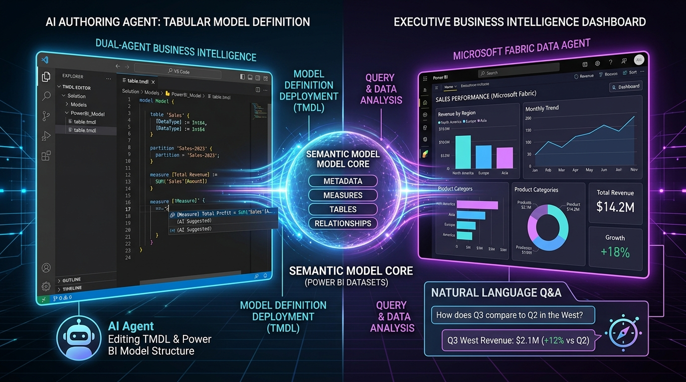
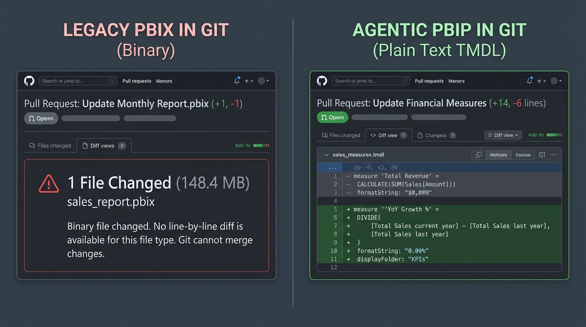
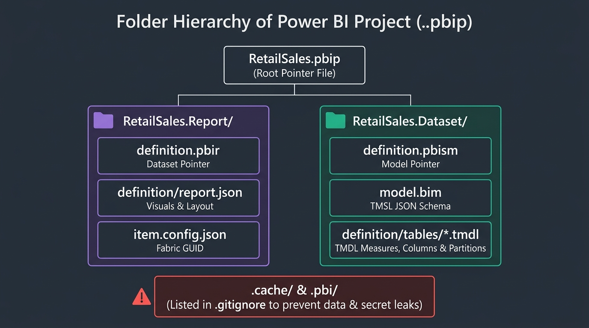
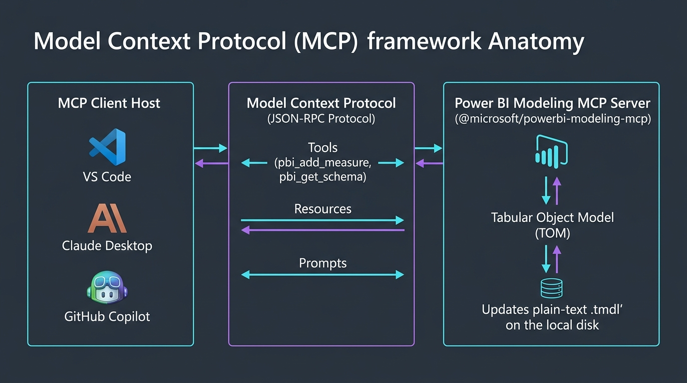
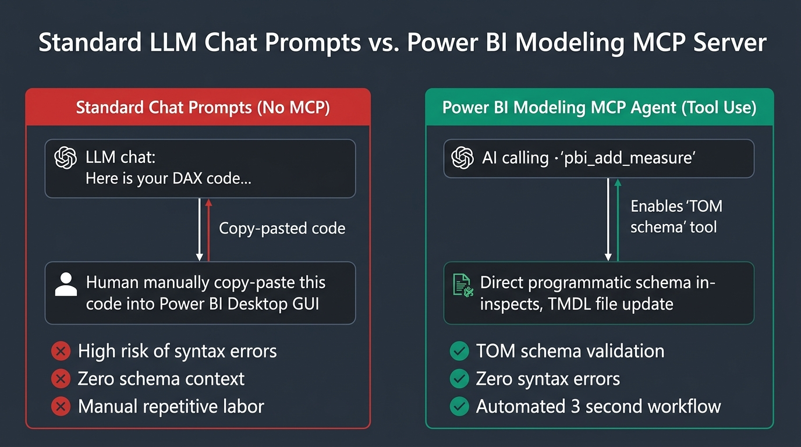
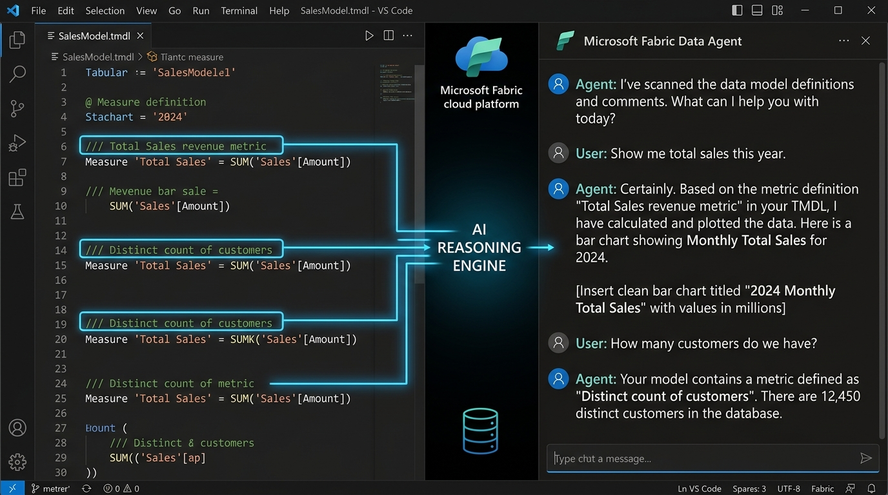
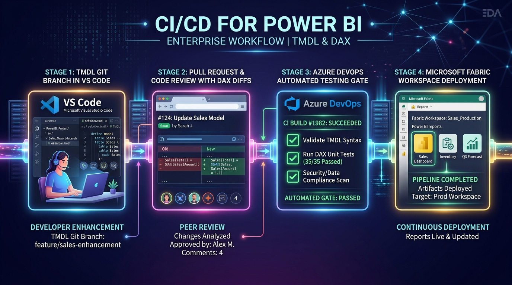
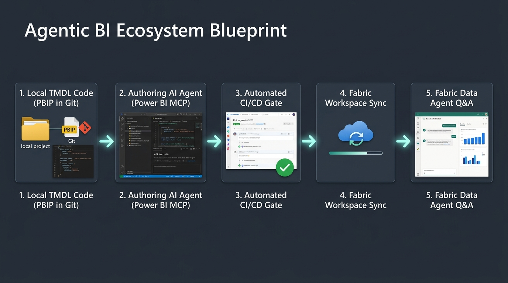

Agentic Business Intelligence
Build a Thinking Dashboard with Microsoft Power BI MCP + PBIP

The PBIX Bottleneck: Why Binary Files Block AI

- •Binary Zip Archive: Locked format, LLMs cannot read or edit raw bytes.
- •Git Merge Nightmares: Conflicts force developer overwrites.
- •GUI Locking: Power BI Desktop `.exe` required for every minor measure tweak.
- •Zero Peer Review: PRs are unreviewable binary blobs.
- •Plain-Text Code: TMDL files sit natively in Git repositories.
- •Agent Co-Developer: AI edits TMDL via Microsoft Power BI MCP Server.
- •Headless BI: Edit models on Mac, Linux, or GitHub Codespaces.
- •Git PR Quality Gate: Line-by-line diffs with automated CI checks.
PBIP Directory & File Hierarchy

Root Project Pointer File
The entry point file opened by Power BI Desktop. Contains JSON metadata pointing to the report artifact path and user recovery settings.
{
"$schema": "https://developer.microsoft.com/json-schemas/fabric/pbip/pbipProperties/1.0.0/schema.json",
"version": "1.0",
"artifacts": [ { "report": { "path": "RetailSales.Report" } } ]
}PBIX Desktop GUI ➔ PBIP/TMDL Folder Parallel Map
Relationship Diagram View
In PBIX, relationships are drawn visually on a canvas. In TMDL, they are listed cleanly in `relationships.tmdl` with explicit from/to columns and cross-filter directions.
relationship Rel_FactSales_DimCustomer
fromColumn: FactSales.CustomerID
toColumn: DimCustomer.CustomerID
relationship Rel_FactSales_DimDate
fromColumn: FactSales.OrderDate
toColumn: DimDate.DatePBIP JSON Schemas & Metadata Specifications
Report Pointer
Links the report to its semantic model (`../RetailSales.Dataset`) using relative paths or Fabric workspace connection GUIDs.
Dataset Pointer
Declares the dataset artifact boundaries in Fabric (`semanticModel/definitionProperties/1.0.0/schema.json`).
Fabric Artifact Identity
Assigns a persistent `logicalId` GUID to report and dataset items for Fabric Git integration tracking.
model.bim vs. TMDL Sync Paradigm:
Power BI Desktop supports both TMSL (`model.bim`) and TMDL (`definition/*.tmdl`). When TMDL preview is enabled, Power BI Desktop parses TMDL files on load, and syncs changes bi-directionally.
TMDL Syntax Anatomy & Triple-Slash Comments
table FactSales
lineageTag: 11111111-2222-3333-4444-555555555555
/// Sum of total gross sales revenue in USD
measure 'Total Sales' = SUM(FactSales[SalesAmount])
formatString: \$#,0.00
displayFolder: Base Metrics
/// YoY Growth % calculated with divide-by-zero protection
measure 'YoY Sales Growth %' =
VAR CurrentSales = [Total Sales]
VAR PriorSales = CALCULATE([Total Sales], SAMEPERIODLASTYEAR('DimDate'[Date]))
RETURN
DIVIDE(CurrentSales - PriorSales, PriorSales, 0)
formatString: 0.00%
displayFolder: Time IntelligenceTriple-Slash Documentation (///)
Comments automatically map to description metadata in Power BI & Fabric Data Agents.
Indentation Scoping
YAML-like tab indents define measures, display folders, and data types cleanly.
Native Multi-Line DAX
Complex DAX with VAR/RETURN blocks format naturally within Git diffs.
The `.cache` Aspect & `.gitignore` Rules
- `cache.abf`: Compressed local Analysis Services database binary cache containing actual imported data rows.
- `localSettings.json`: User-specific local credentials, connection overrides, and window state.
- ⚠️ Why committing `.cache` is dangerous:
- • Bloats Git repo size with multi-gigabyte binary files.
- • Exposes sensitive database records in source code history.
- • Triggers merge conflicts on every local report view.
# Power BI Local Cache & Settings
.cache/
.pbi/
cache.abf
localSettings.json
*.tmp
# OS & Environment
.DS_Store
Thumbs.dbThe Dual-Agent Continuum
Authoring Agent (Developer Co-Pilot)
Powered by Microsoft Power BI Modeling MCP Server
- ✔Generates DAX measures via natural language
- ✔Auto-documents TMDL schema (`///` descriptions)
- ✔Manages relationships & calculation groups
- ✔Validates TMDL syntax before Git commit
Consumption Agent (Fabric Data Agent)
Executive & End-User Conversational Q&A Hook
- ✔Answers natural language data queries
- ✔Generates dynamic DAX & exploratory charts
- ✔Relies 100% on authoring phase TMDL metadata
- ✔Hook for business users (Requires Fabric capacity)
Microsoft Power BI Modeling MCP Server


Schema Inspection
Scans PBIP TMDL directory and exposes tables, columns, measures, and relationships to LLM context.
DAX Injection
Appends formatted DAX measures with `formatString`, `displayFolder`, and `///` comments directly into target `.tmdl` files.
Auto-Documentation
Injects business metadata descriptions into TMDL tables and columns automatically.
{
"mcpServers": {
"powerbi-modeling": {
"command": "npx",
"args": ["-y", "@microsoft/powerbi-modeling-mcp", "--project-path", "./RetailSales.pbip"]
}
}
}Fabric Data Agent Readiness Calculator

Toggle TMDL Model Metadata Quality:
High quality TMDL metadata prevents Fabric Copilot hallucinations.
Live Workshop Hands-On Workflow
Open PBIP in VS Code
Open `RetailSales.pbip` and explore plain-text TMDL table files.
Connect MCP Server
Verify Microsoft Power BI MCP Server connection via agent command.
Prompt-Driven DAX
Create YoY Sales Growth & Margin measures via natural language.
Auto-Doc & Dictionary
Generate TMDL `///` descriptions and compile a Markdown Data Dictionary.
Headless BI: Beyond Windows & Desktop GUI
Cross-Platform Dev
Model Power BI datasets on macOS, Linux, or GitHub Codespaces without running Power BI Desktop `.exe`.
Cross-Model Copying
Copy standard calculation groups and KPI suites across 10 PBIP models instantly via agent prompts.
Automated Refactoring
Batch-update formatting, remove unused columns, and fix unindexed relationships programmatically.
Fabric Git Integration & Azure DevOps Architecture
Developer & AI Agent commit TMDL changes to Azure Repos / GitHub.
Automated BPA linter checks & peer review on `main` branch merge.
Fabric workspace syncs directly with Git `main` branch to update semantic model.
Azure DevOps CI/CD Pipelines for Power BI

trigger:
branches:
include: [ main ]
jobs:
- job: Validate_TMDL_and_Deploy
pool: vmImage: 'ubuntu-latest'
steps:
- task: UsePythonVersion@0
inputs: { versionSpec: '3.10' }
- script: npx -y @microsoft/powerbi-modeling-mcp --validate ./RetailSales.pbip
displayName: 'Validate TMDL Syntax'
- script: TabularEditor.exe ./RetailSales.Dataset/definition -BPA -BPAOUT ./bpa-results.json
displayName: 'Tabular Editor Best Practice Analyzer (BPA)'Fabric Deployment Pipelines (Dev ➔ Test ➔ Prod)
Dev Workspace
Connected to Git `dev` or feature branch. Used by BI engineers & AI agents for active TMDL authoring.
Test Workspace
Connected to Git `main` branch. Runs automated regression testing and UAT over full data sets.
Prod Workspace
Locked production semantic model serving business reports & Fabric Data Agents with zero downtime.
Live Agentic Prompt Simulator
// Click execute to view real-time TMDL modifications...The One Repeatable Pattern

Take this exact workflow back to your enterprise engineering team on your next working day.
Developer & Architecture References
-
Power BI Modeling MCP Server GitHub Repo
↗
Official Microsoft open-source MCP server implementation (`@microsoft/powerbi-modeling-mcp`).
-
Power BI MCP Servers Overview (MS Learn)
↗
Conceptual documentation for integrating MCP servers into VS Code and AI tools.
-
Power BI Projects (.pbip) Developer Overview
↗
Developer specs for folder hierarchy, `$schema` references, and `.pbir`/`.pbism` format.
-
Tabular Model Definition Language (TMDL) Overview
↗
Syntax reference for TOM objects, multi-line measures, annotations, and formatting.
-
Microsoft Fabric Git Integration Intro
↗
Syncing PBIP git branches directly with Microsoft Fabric workspaces in Azure DevOps.
-
Use TMDL View in Power BI Desktop
↗
Guide for viewing and editing TMDL code natively inside Power BI Desktop.
-
Microsoft Fabric Data Agents & Copilot Overview
↗
How AI data agents consume enriched TMDL semantic models for natural language Q&A.
-
Tabular Object Model (TOM) Developer Reference
↗
C# TOM API reference underlying Power BI modeling operations.